Marvel Adventures Spider-Man (2005 - 2010)
| Comic Book | Release Date | Cover |
|---|---|---|
| Marvel Adventures Spider-Man #1 Here Comes Spider-Man |  | |
| Marvel Adventures Spider-Man #2 The Sinister Six | 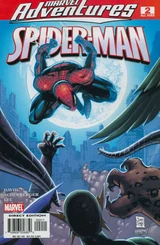 | |
| Marvel Adventures Spider-Man #3 The Sinister Six: Part Two | 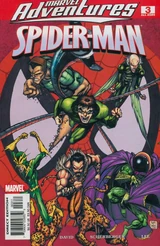 | |
| Marvel Adventures Spider-Man #4 Goom Got Game! | 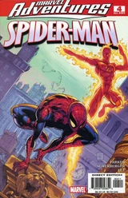 | |
| Marvel Adventures Spider-Man #5 Power Struggle | 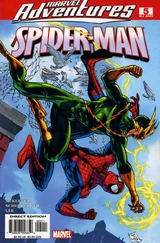 | |
| Marvel Adventures Spider-Man #6 Picture-Perfect Peril | 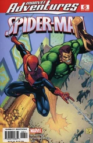 | |
| Marvel Adventures Spider-Man #7 Vulture Hunt! | 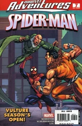 | |
| Marvel Adventures Spider-Man #8 Rush Hour | 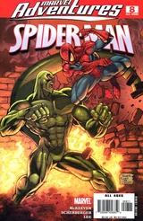 | |
| Marvel Adventures Spider-Man #9 Doom With a View | 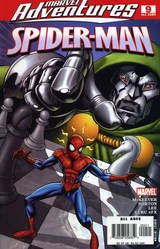 | |
| Marvel Adventures Spider-Man #10 Make Mine Mysterio! | 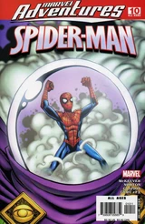 | |
| Marvel Adventures Spider-Man #11 They Call Him Mad! | 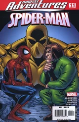 | |
| Marvel Adventures Spider-Man #12 Nightmare on Spidey Street | 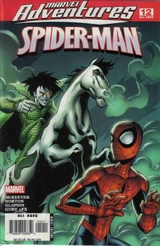 | |
| Marvel Adventures Spider-Man #13 The Chameleon Caper | 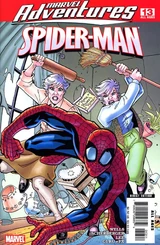 | |
| Marvel Adventures Spider-Man #14 The Black Cat | 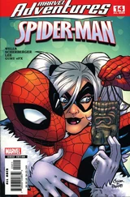 | |
| Marvel Adventures Spider-Man #15 How Spider-Man Learned to Stop Worrying and Love the Arms! | 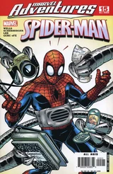 | |
| Marvel Adventures Spider-Man #16 I, Reptile! | 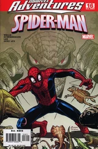 | |
| Marvel Adventures Spider-Man #17 Hair of the Dog That Bit Ya! | 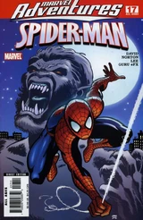 | |
| Marvel Adventures Spider-Man #18 | 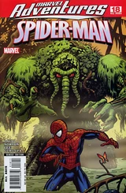 | |
| Marvel Adventures Spider-Man #19 | 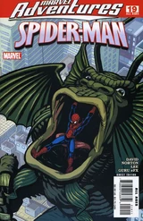 | |
| Marvel Adventures Spider-Man #20 Monster Mash | 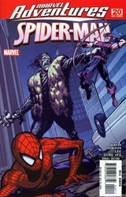 | |
| Marvel Adventures Spider-Man #21 Fashion Victims | 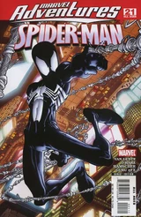 | |
| Marvel Adventures Spider-Man #22 World War G | 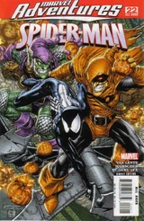 | |
| Marvel Adventures Spider-Man #23 Dust-Up in Aisle Seven! | 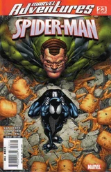 | |
| Marvel Adventures Spider-Man #24 Breaking Up is Venomous To Do! | 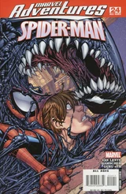 | |
| Marvel Adventures Spider-Man #25 Three Rings...of Danger! | 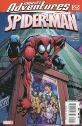 | |
| Marvel Adventures Spider-Man #26 Reading, Writing, and a Robot | 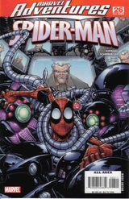 | |
| Marvel Adventures Spider-Man #27 But Seriously, Folks... | 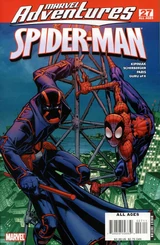 | |
| Marvel Adventures Spider-Man #28 I Hate Spider-Man! | 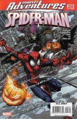 | |
| Marvel Adventures Spider-Man #29 Rock and Roll | 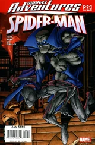 | |
| Marvel Adventures Spider-Man #30 Whirlwind Tour | 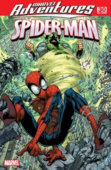 | |
| Marvel Adventures Spider-Man #31 Fired! | 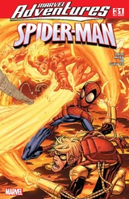 | |
| Marvel Adventures Spider-Man #32 Submerged | 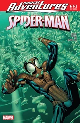 | |
| Marvel Adventures Spider-Man #33 The Tenant | 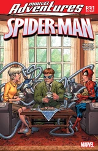 | |
| Marvel Adventures Spider-Man #34 The Un-Natural | 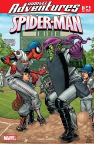 | |
| Marvel Adventures Spider-Man #35 The Side-Kick | 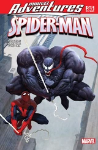 | |
| Marvel Adventures Spider-Man #36 The Good Son | 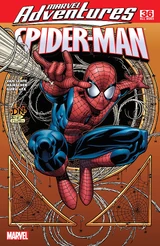 | |
| Marvel Adventures Spider-Man #37 School of Hard Knocks | 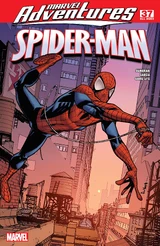 | |
| Marvel Adventures Spider-Man #38 There's No Bee in Team | 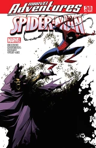 | |
| Marvel Adventures Spider-Man #39 Model Student | 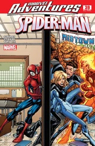 | |
| Marvel Adventures Spider-Man #40 If I Had a Hammer... | 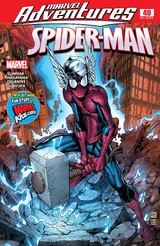 | |
| Marvel Adventures Spider-Man #41 The Need For Speed Stampede! | 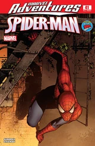 | |
| Marvel Adventures Spider-Man #42 Cat Fight! | 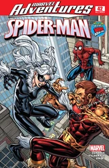 | |
| Marvel Adventures Spider-Man #43 A Whale of a Tale | 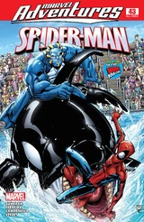 | |
| Marvel Adventures Spider-Man #44 Evil On a Grander Scale | 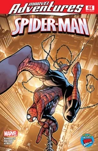 | |
| Marvel Adventures Spider-Man #45 Pieces of the Puzzle | 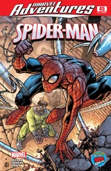 | |
| Marvel Adventures Spider-Man #46 Silent Nights | 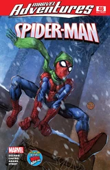 | |
| Marvel Adventures Spider-Man #47 ...Everything You Read... | 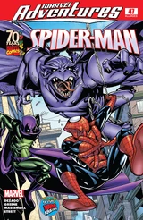 | |
| Marvel Adventures Spider-Man #48 Two for One | 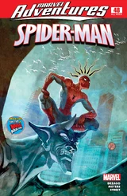 | |
| Marvel Adventures Spider-Man #49 Playing Hero | 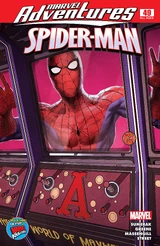 | |
| Marvel Adventures Spider-Man #50 Sinister Six(teenth) | 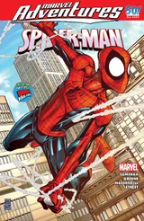 | |
| Marvel Adventures Spider-Man #51 PvP (Pete vs. Pete) | 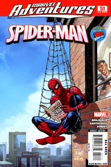 | |
| Marvel Adventures Spider-Man #52 No Substitute | ||
| Marvel Adventures Spider-Man #53 A Sense of Responsibility | ||
| Marvel Adventures Spider-Man #54 Taken for a Ride | ||
| Marvel Adventures Spider-Man #55 Why I Was Late For Class | ||
| Marvel Adventures Spider-Man #56 Vigilantes | ||
| Marvel Adventures Spider-Man #57 The Silencer | ||
| Marvel Adventures Spider-Man #58 | ||
| Marvel Adventures Spider-Man #59 | ||
| Marvel Adventures Spider-Man #60 | ||
| Marvel Adventures Spider-Man #61 |